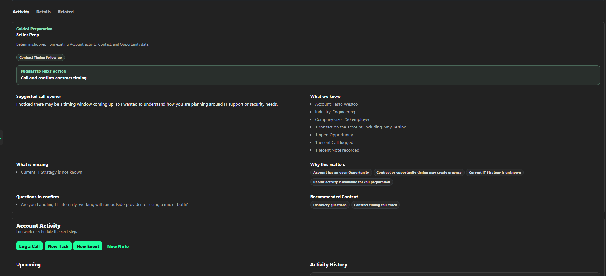

Sales Enablement Platform

Challenge
Sales representatives often work across CRM records, shared resources, training platforms, scripts, playbooks, and AI tools. Guidance becomes disconnected from the activity being completed, forcing users to search for information and rely on memory.
Approach
I used familiar CRM architecture as the operational backbone, then organized learning, knowledge, coaching, playbooks, and AI guidance around the account and activity workflows where people need them.
Solution
- Prioritized daily work and next actions
- Account and opportunity context
- Calls, tasks, events, and notes
- Embedded learning, playbooks, knowledge, and AI guidance
Demonstrated value
The working prototype shows how enablement can become part of daily execution instead of remaining a separate content destination.
